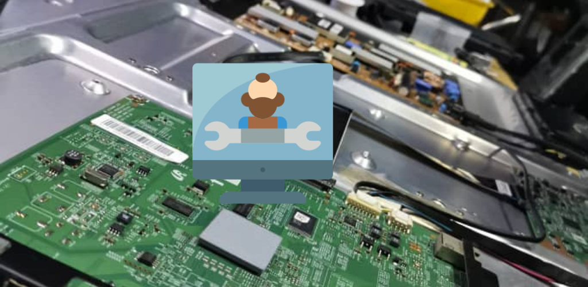

Repair TV
Repair tv is progressive web application developed by myself as a landing page for a television-repairing service company. The web app is built using Gatsby js specifically because I wanted to learn about SEO optimization which will greatly boost the business.
This web app uses Firebase Hosting and the code is maintained at Github
View Repair TV.